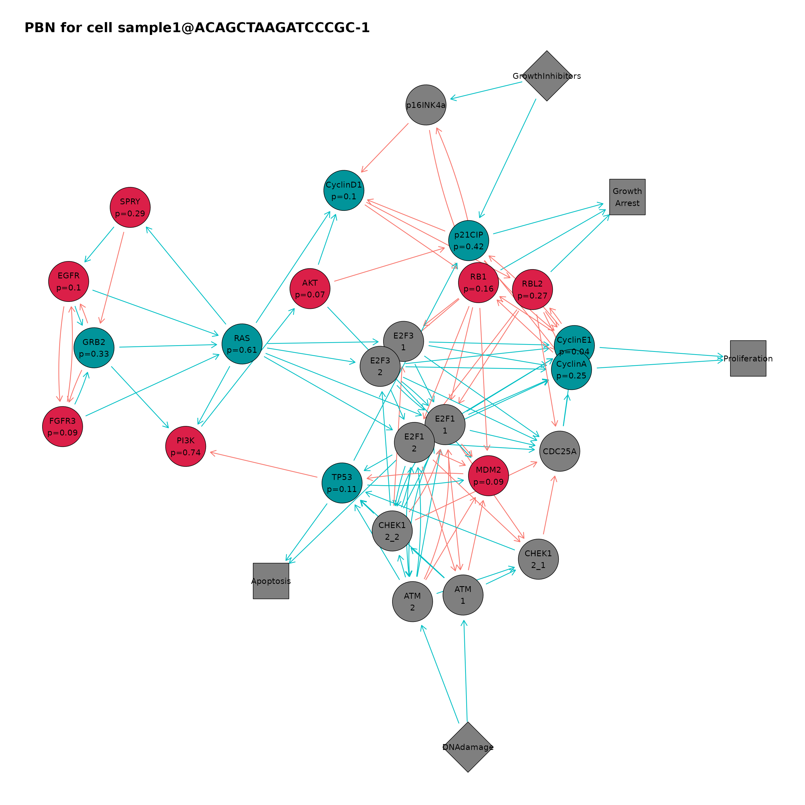
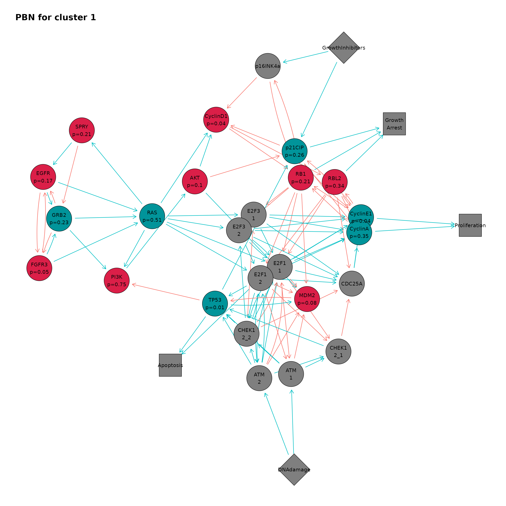
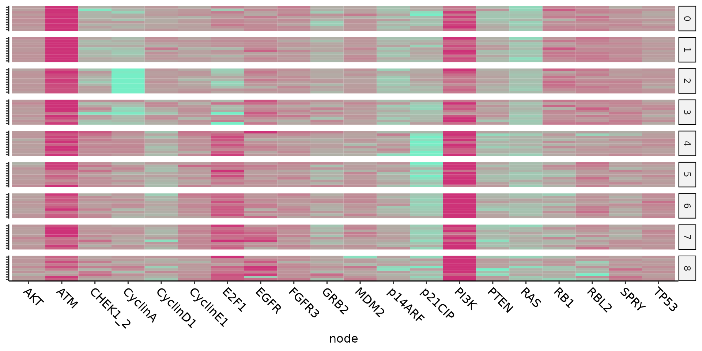
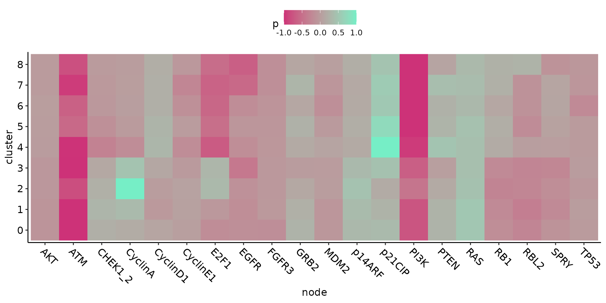

Using Ingres to obtain single-cell probabilistic Boolean networks from single-cell RNA-seq data
Source:vignettes/ingres.Rmd
ingres.RmdOverview of Ingres
Gene regulatory networks (GRN) have long been used as a way to integrate heterogeneous data into a discrete model, and are very useful to generate actionable hypotheses on the mechanisms governing these biological processes. Here we present Ingres (Inferring Probabilistic Boolean Networks of Gene Regulation Using Protein Activity Enrichment Scores) an open-source tool that uses
single-cell sequencing data and prior knowledge GRNs to produce a probabilistic
Boolean network (PBN) per each cell and/or cluster of cells in the dataset. Ingres allows to better capture the differences between cell phenotypes, using a continuous measure of protein activity while still confined to the simplicity of a GRN. We believe Ingres will be useful to better understand the heterogeneous makeup of cell populations, to gain insight into the specific circuits that drive certain phenotypes, and to use expression and other omics to infer computational cellular models in bulk or single-cell data.
Specifically, we use a previously developed algorithm, VIPER,1 to infer protein activity starting from a gene expression matrix and a list of regulons —defined as the list of transcriptional targets of each protein. This computes a matrix of normalised enrichment scores (NES) for each protein. The expression of these regulons represent an optimal indirect method to measure the activity of a specific gene/protein (the nodes in the preexisting Boolean network). This constitutes a novel way to fit the PBN using single-cell RNAseq data.
For more details on the specific algorithms used, please refer to our publication describing Ingres2.
Citation
Victori, P. & Buffa, F. M. Ingres: from single-cell RNA-seq data to single-cell probabilistic Boolean networks. 2022.09.04.506528 Preprint at https://doi.org/10.1101/2022.09.04.506528 (2022).
Dependencies
Most of Ingres dependencies are available on CRAN. Some of them need to be installed from Bioconductor:
Creating the Ingres object
First we load the Ingres package:
Then we need to create an Ingres object that will hold all the necessary data. Ingres contains example data to show how to use its functions, we will print them in this vignette so their structure can be seen. There are two main ways of creating an Ingres object. The easiest one is using a Seurat3 object with the scaling and clustering pipelines already performed (see the corresponding introductory vignette to Seurat):
small_blca_wang
#> An object of class Seurat
#> 16314 features across 90 samples within 1 assay
#> Active assay: RNA (16314 features, 2000 variable features)
#> 1 dimensional reduction calculated: tsneWe also need a network object in tidygraph format:
network
#> # A tbl_graph: 30 nodes and 110 edges
#> #
#> # A directed multigraph with 1 component
#> #
#> # Node Data: 30 × 3 (active)
#> kind rule id
#> <chr> <chr> <chr>
#> 1 input "" DNAdamage
#> 2 input "" GrowthInhibitors
#> 3 fate "CyclinE1 or CyclinA" Proliferation
#> 4 fate "E2F1_2 or TP53" Apoptosis
#> 5 fate "p21CIP or RB1 or RBL2" Growth_Arrest
#> 6 gene "SPRY and not FGFR3 and not GRB2" EGFR
#> # … with 24 more rows
#> #
#> # Edge Data: 110 × 3
#> from to sign
#> <int> <int> <chr>
#> 1 8 30 positive
#> 2 14 3 positive
#> 3 15 3 positive
#> # … with 107 more rowsIngres includes several helper functions that can transform GinSim or graphml files to the tidygraph format.
# Load the graphml example file
filename = system.file("extdata", "example_network.graphml", package = "ingres")
#Convert to tidygraph format
graphmlAsTidy(filename)
#> # A tbl_graph: 30 nodes and 110 edges
#> #
#> # A directed multigraph with 1 component
#> #
#> # Node Data: 30 × 3 (active)
#> kind rule id
#> <chr> <chr> <chr>
#> 1 input "" DNAdamage
#> 2 input "" GrowthInhibitors
#> 3 fate "CyclinE1 or CyclinA" Proliferation
#> 4 fate "E2F1_2 or TP53" Apoptosis
#> 5 fate "p21CIP or RB1 or RBL2" Growth_Arrest
#> 6 gene "SPRY and not FGFR3 and not GRB2" EGFR
#> # … with 24 more rows
#> #
#> # Edge Data: 110 × 3
#> from to sign
#> <int> <int> <chr>
#> 1 8 30 positive
#> 2 14 3 positive
#> 3 15 3 positive
#> # … with 107 more rows
# Load the GinSim (.zginml) example file
filename = system.file("extdata", "example_ginsim.zginml", package = "ingres")
# Convert to graphml and store it in a temporary file
temp = tempfile()
gml = ginmlToGraphml(filename, dest = temp)
head(gml)
#> [1] "<?xml version=\"1.0\" encoding=\"UTF-8\"?><graphml xmlns=\"http://graphml.graphdrawing.org/xmlns\">"
#> [2] "<key attr.name=\"kind\" attr.type=\"string\" for=\"node\" id=\"kind\"/>"
#> [3] "<key attr.name=\"rule\" attr.type=\"string\" for=\"node\" id=\"rule\"/>"
#> [4] "<key attr.name=\"sign\" attr.type=\"string\" for=\"edge\" id=\"sign\"/>"
#> [5] "<graph edgedefault=\"directed\">"
#> [6] "<node id=\"DNA_Damage\">"
# Convert to tidygraph
graphmlAsTidy(temp)
#> # A tbl_graph: 26 nodes and 71 edges
#> #
#> # A directed simple graph with 1 component
#> #
#> # Node Data: 26 × 3 (active)
#> kind rule id
#> <chr> <chr> <chr>
#> 1 input "" DNA_Damage
#> 2 gene "DNA_Damage and (E2F1 or not Wip1 or not HDAC1)" ATM
#> 3 gene "ATM and not Wip1" p38MAPK
#> 4 gene "(not Wip1 or p53) and not ATM" Mdm2
#> 5 gene "ATM or (not Mdm2 and p38MAPK)" p53
#> 6 gene "p53_A" Wip1
#> # … with 20 more rows
#> #
#> # Edge Data: 71 × 3
#> from to sign
#> <int> <int> <chr>
#> 1 18 8 negative
#> 2 18 7 negative
#> 3 18 17 negative
#> # … with 68 more rowsA data frame with a row per node in the network and its corresponding gene symbol, in case nodes in the network have different names:
network_genes
#> node symbol
#> 1 EGFR EGFR
#> 2 FGFR3 FGFR4
#> 3 RAS HRAS
#> 4 RAS KRAS
#> 5 RAS NRAS
#> 6 E2F1 E2F1
#> 7 CyclinD1 CCND1
#> 8 CyclinE1 CCNE1
#> 9 CyclinA CCNA1
#> 10 CyclinA CCNA2
#> 11 CDC25A CDC25A
#> 12 p16INK4a p16INK4a
#> 13 RB1 RB1
#> 14 RBL2 RBL2
#> 15 p21CIP CDKN1A
#> 16 ATM ATM
#> 17 CHEK1_2 CHEK1
#> 18 CHEK1_2 CHEK1
#> 19 MDM2 MDM2
#> 20 TP53 TP53
#> 21 p14ARF CDKN2A
#> 22 PTEN PTEN
#> 23 PI3K PIK3CA
#> 24 AKT AKT1
#> 25 AKT AKT2
#> 26 AKT AKT3
#> 27 GRB2 GRB2
#> 28 SPRY SPRY2We can use the function createNetworkGenesTemplate to generate a network_genes file with the node names prepopulated. If using RStudio interactively, the function opens this file for us to modify as needed.
# store and modify = F just for demonstration.
createNetworkGenesTemplate(network, store = F, modify = F)
#> # A tibble: 25 × 2
#> node symbol
#> <chr> <chr>
#> 1 EGFR EGFR
#> 2 FGFR3 FGFR3
#> 3 RAS RAS
#> 4 E2F1_1 E2F1_1
#> 5 E2F1_2 E2F1_2
#> 6 E2F3_1 E2F3_1
#> 7 E2F3_2 E2F3_2
#> 8 CyclinD1 CyclinD1
#> 9 CyclinE1 CyclinE1
#> 10 CyclinA CyclinA
#> # … with 15 more rows
# Then, modify as needed.Then, we can create the Ingres object:
ing = createIngresObjectFromSeurat(
seurat.object = small_blca_wang,
seurat.assay = "RNA",
slot = "data",
network.genes = network_genes,
network = network
)
ing
#> An ingres object
#> --------------------
#> 16314 features across 90 samples
#> 9 clusters
#> Its Boolean network has 30 nodes
#> Viper not performedAn Ingres object can also be created without a Seurat object, by providing a expression matrix, with cells in rows and genes in columns, and a idents data.frame with each cell barcode and its corresponding cluster or subpopulation:
exp = ing@expression
exp[1:2, 1:2]
#> sample1@AGCTTGAGTTCCTCCA-1 sample1@CAGCAGCCAGTCTTCC-1
#> RP11-34P13.7 0 0
#> AL627309.1 0 0
idents = ing@idents
head(idents)
#> cell cluster
#> 1 sample1@AGCTTGAGTTCCTCCA-1 5
#> 2 sample1@CAGCAGCCAGTCTTCC-1 5
#> 3 sample1@CTAGCCTGTTAGTGGG-1 5
#> 4 sample1@GATGAGGGTCTGGTCG-1 5
#> 5 sample1@TGACTTTTCAAGAAGT-1 5
#> 6 sample1@TGCGTGGGTGTTGGGA-1 5
createIngresObject(
expression.matrix = exp,
idents = idents,
network.genes = network_genes,
network = network)
#> An ingres object
#> --------------------
#> 16314 features across 90 samples
#> 9 clusters
#> Its Boolean network has 30 nodes
#> Viper not performedRunning VIPER
The next step is to run VIPER. For more information about the algorithm VIPER uses, please refer to its documentation.
Ingres runs VIPER on the provided gene expression matrix, using the regulon supplied by the user. This regulon can come from the ARACNe algorithm4,5 or from other databases such as Dorothea.6 If several regulons are provided, the metaVIPER algorithm [14] will be run instead.
This algorithm is designed to integrate multiple interactomes, not necessarily tissue-matched, as VIPER needed to work accurately. This is most valuable in single-cell RNA-seq data, due to its heterogeneity, inherent noisiness and low sequencing depth.7 Indeed, metaVIPER has been shown to reduce bias and batch effect, generating reproducible protein-activity signatures [14]. Therefore, we recommend this method for Ingres. Collections of tumour regulons are available at Bioconductor.8 The package aracne.networks, a suggested dependency for Ingres, contains ARACNe-inferred networks from TCGA tumor datasets.
VIPER produces a matrix of Normalised Enrichment Scores (NES) per each gene and cell.
# Using a single regulon for speed
ing = performViper(ing, aracne.networks::regulonblca)
ing
#> An ingres object
#> --------------------
#> 16314 features across 90 samples
#> 9 clusters
#> Its Boolean network has 30 nodes
#> Viper performedComputing the PBNs
Now we can generate PBNs for every cell and/or every cluster in our Ingres object. This will generate a PBN that is a copy of the provided Boolean network but with a second rule in each gene node that is a fixed 1 or 0 (always active or always inactive). The probability of these rules being chosen will be proportional to the NES computed by VIPER. By default, this step will re-scale NES to (-1,1) for each gene in each cell. This is, the gene with the highest NES in a given cell will be re-scaled to 1 and the gene with the lowest NES in that same cell will be re-scaled to -1, and every other gene will be re-scaled relative to that range. Then, all genes with a re-scaled NES>0 will have a fixed 1 rule added to the corresponding network node, with a probability equals to its re-scaled NES. All genes with a re-scaled NES<0 will have a fixed 0 ruled added, with a probability equals to [re-scaled NES]. The original rule for each node will have a probability equals to 1-[fixed rule probability].
The range (-1,1) can be changed by the user, in case a less intense effect by the RNA-seq data is desired. For example, if the range is inputed as (-0.5, 0.5), the gene with the highest expression will have a 0.5 probability of activating its fixed rule, the same chance as its original rule.
ing = computePbnBySingleCell(ing)
ing
#> An ingres object
#> --------------------
#> 16314 features across 90 samples
#> 9 clusters
#> Its Boolean network has 30 nodes
#> Viper performed
#> PBNs computed for each cell
head(ing@single.cell.pbn)
#> cell cluster AKT ATM CHEK1_2
#> 1 sample1@AAGGAGCCAGCTTCGG-1 2 0.01817583 -0.7989694 0.099920471
#> 2 sample1@ACAGCTAAGATCCCGC-1 1 -0.07269741 -1.0000000 0.219362784
#> 3 sample1@ACGATGTAGTACATGA-1 3 -0.01603311 -0.9357372 0.513787703
#> 4 sample1@ACGGAGACAAATTGCC-1 2 -0.07899067 -0.7880775 0.055078000
#> 5 sample1@ACGGGCTCAAACCTAC-1 2 -0.04870924 -0.8023977 -0.002197616
#> 6 sample1@ACTGATGAGAGCTGGT-1 8 0.01102953 -0.6630933 0.153858311
#> CyclinA CyclinD1 CyclinE1 E2F1 EGFR FGFR3
#> 1 1.0000000 0.005835620 -0.12590699 0.09456779 -0.002438333 -0.06437469
#> 2 0.2526539 0.100580602 0.03804537 0.14432723 -0.102653311 -0.08783756
#> 3 0.4896386 0.210391219 -0.04145495 1.00000000 -0.378800533 0.14514210
#> 4 1.0000000 0.060062911 -0.06046783 -0.06633384 -0.135412201 -0.03497538
#> 5 1.0000000 0.003268819 0.04396283 0.40529261 0.229916691 -0.24036193
#> 6 0.1336534 0.492846995 -0.26039627 -0.69295991 -0.509692556 -0.37852354
#> GRB2 MDM2 p14ARF p21CIP PI3K PTEN
#> 1 0.31113702 -0.033343239 0.3929228 0.38233341 -0.4071378 0.29342925
#> 2 0.32854332 -0.094203638 0.3691654 0.42156174 -0.7358486 0.35724316
#> 3 -0.07954781 0.054171975 0.5303340 0.01893101 -0.5368198 -0.05223321
#> 4 0.14676515 -0.033723994 0.4598230 0.29802852 -0.5897442 0.20687463
#> 5 0.05351330 0.008933491 0.3479199 0.37278246 -0.4302515 0.27558028
#> 6 0.37222843 -0.326267067 0.1103229 0.37679082 -1.0000000 0.05096307
#> RAS RB1 RBL2 SPRY TP53
#> 1 0.3769146 -0.02103803 -0.2541966 -0.2188479 -0.10594942
#> 2 0.6074293 -0.15998474 -0.2668762 -0.2855518 0.10555768
#> 3 0.5145371 -0.38879500 -0.4278514 -0.3070425 0.15455175
#> 4 0.5643470 -0.18693366 -0.2616696 -0.1796798 -0.09579184
#> 5 0.5007909 -0.38687170 -0.3977755 -0.2124557 0.17860741
#> 6 0.4309240 0.66462958 0.3797944 -0.2995955 -0.12893251
head(computePbnBySingleCell(ing, c(-0.5, 0.5))@single.cell.pbn)
#> cell cluster AKT ATM CHEK1_2
#> 1 sample1@AAGGAGCCAGCTTCGG-1 2 0.009087914 -0.3994847 0.049960235
#> 2 sample1@ACAGCTAAGATCCCGC-1 1 -0.036348706 -0.5000000 0.109681392
#> 3 sample1@ACGATGTAGTACATGA-1 3 -0.008016553 -0.4678686 0.256893851
#> 4 sample1@ACGGAGACAAATTGCC-1 2 -0.039495337 -0.3940388 0.027539000
#> 5 sample1@ACGGGCTCAAACCTAC-1 2 -0.024354619 -0.4011988 -0.001098808
#> 6 sample1@ACTGATGAGAGCTGGT-1 8 0.005514765 -0.3315466 0.076929156
#> CyclinA CyclinD1 CyclinE1 E2F1 EGFR FGFR3
#> 1 0.5000000 0.002917810 -0.06295350 0.04728390 -0.001219166 -0.03218735
#> 2 0.1263270 0.050290301 0.01902269 0.07216362 -0.051326656 -0.04391878
#> 3 0.2448193 0.105195610 -0.02072748 0.50000000 -0.189400267 0.07257105
#> 4 0.5000000 0.030031455 -0.03023391 -0.03316692 -0.067706100 -0.01748769
#> 5 0.5000000 0.001634409 0.02198142 0.20264630 0.114958345 -0.12018097
#> 6 0.0668267 0.246423498 -0.13019813 -0.34647995 -0.254846278 -0.18926177
#> GRB2 MDM2 p14ARF p21CIP PI3K PTEN
#> 1 0.15556851 -0.016671619 0.19646142 0.191166703 -0.2035689 0.14671463
#> 2 0.16427166 -0.047101819 0.18458272 0.210780872 -0.3679243 0.17862158
#> 3 -0.03977391 0.027085987 0.26516699 0.009465505 -0.2684099 -0.02611660
#> 4 0.07338257 -0.016861997 0.22991148 0.149014262 -0.2948721 0.10343732
#> 5 0.02675665 0.004466745 0.17395994 0.186391231 -0.2151258 0.13779014
#> 6 0.18611422 -0.163133533 0.05516143 0.188395408 -0.5000000 0.02548154
#> RAS RB1 RBL2 SPRY TP53
#> 1 0.1884573 -0.01051901 -0.1270983 -0.10942395 -0.05297471
#> 2 0.3037147 -0.07999237 -0.1334381 -0.14277588 0.05277884
#> 3 0.2572686 -0.19439750 -0.2139257 -0.15352125 0.07727588
#> 4 0.2821735 -0.09346683 -0.1308348 -0.08983989 -0.04789592
#> 5 0.2503954 -0.19343585 -0.1988878 -0.10622785 0.08930371
#> 6 0.2154620 0.33231479 0.1898972 -0.14979777 -0.06446626We can also compute a single PBN per each cluster. In that case, the median NES for each gene across all cells in that cluster is used to produce the PBN:
ing = computePbnByCluster(ing)
ing
#> An ingres object
#> --------------------
#> 16314 features across 90 samples
#> 9 clusters
#> Its Boolean network has 30 nodes
#> Viper performed
#> PBNs computed for each cell
#> PBNs computed for each clusterVisualization of results
We can export any PBN for further analysis by providing its cell barcode or cluster id:
produceNetworkForCell(ing, "sample1@ACAGCTAAGATCCCGC-1")
produceNetworkForCluster(ing, "1")In the same way, we can plot any network:
cellPbnPlot(ing, "sample1@ACAGCTAAGATCCCGC-1")
clusterPbnPlot(ing, "1")
An overview of the results can be plotted as heatmaps:
cellGenesHeatmap(ing)
clusterGenesHeatmap(ing)
Finally, any network can be exported as a BoolNet9 network. This package includes a variety of functions to analyse networks:
ing_network = produceNetworkForCluster(ing, "1")
boolnet_network = produceBoolnetNetwork(ing_network)
# Generate a initial state where all nodes have state 1
initial_state = rep(1, length(network))
# Compute one state transition from the given initial state.
transition1 = BoolNet::stateTransition(
boolnet_network,
type = "probabilistic",
state = initial_state)
head(transition1)
#> DNAdamage GrowthInhibitors Proliferation Apoptosis
#> 1 1 1 1
#> Growth_Arrest EGFR
#> 1 0References
1. Alvarez, M. J. et al. Functional characterization of somatic mutations in cancer using network-based inference of protein activity. Nature Genetics 48, 838–847 (2016).
2. Victori, P. & Buffa, F. M. Ingres: From single-cell RNA-seq data to single-cell probabilistic Boolean networks. 2022.09.04.506528 (2022) doi:10.1101/2022.09.04.506528.
3. Hao, Y. et al. Integrated analysis of multimodal single-cell data. (2021) doi:10.1016/j.cell.2021.04.048.
4. Basso, K. et al. Reverse engineering of regulatory networks in human b cells. Nature Genetics 37, 382–390 (2005).
5. Lachmann, A., Giorgi, F. M., Lopez, G. & Califano, A. ARACNe-ap: Gene network reverse engineering through adaptive partitioning inference of mutual information. Bioinformatics 32, 2233–2235 (2016).
6. Garcia-Alonso, L., Holland, C. H., Ibrahim, M. M., Turei, D. & Saez-Rodriguez, J. Benchmark and integration of resources for the estimation of human transcription factor activities. Genome Research 29, 1363–1375 (2019).
7. Ding, H. et al. Quantitative assessment of protein activity in orphan tissues and single cells using the metaVIPER algorithm. Nature Communications 9, 1471 (2018).
8. Giorgi, F. M. Aracne.networks: ARACNe-inferred gene networks from tcga tumor datasets. (Bioconductor, 2017). doi:10.18129/B9.BIOC.ARACNE.NETWORKS.
9. Müssel, C., Hopfensitz, M. & Kestler, H. A. BoolNet – an r package for generation, reconstruction and analysis of boolean networks. Bioinformatics 26, 1378–1380 (2010).